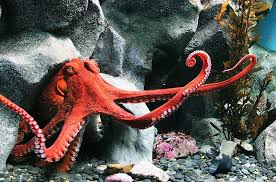

Gurita dapat dikenali dengan delapan lengannya dan kemampuan menyamar yang luar biasa. Gurita adalah hewan laut yang dikenal dengan delapan lengannya, kemampuan menyemprotkan tinta, serta kecerdasannya yang tinggi. Ia juga memiliki kemampuan kamuflase yang luar biasa untuk menghindari predator.
Gurita dapat ditemukan di berbagai lautan di seluruh dunia. Mereka hidup di laut tropis hingga perairan dingin. Biasanya gurita tinggal di dasar laut yang berbatu atau berpasir. Mereka sering bersembunyi di celah-celah karang atau gua laut. Gurita juga ditemukan di perairan dangkal maupun laut dalam. Beberapa spesies gurita hidup di terumbu karang. Ada juga gurita yang mendiami perairan dekat pantai. Mereka menyukai tempat yang gelap dan tersembunyi untuk perlindungan.
Gurita memiliki banyak jenis yang tersebar di seluruh dunia. Salah satu yang terbesar adalah gurita Pasifik raksasa. Ukurannya bisa mencapai lebih dari 4 meter. Ada juga gurita kecil seperti gurita cincin biru yang sangat beracun. Ukuran gurita bervariasi tergantung spesiesnya. Masing-masing jenis memiliki bentuk, warna, dan kemampuan yang berbeda.